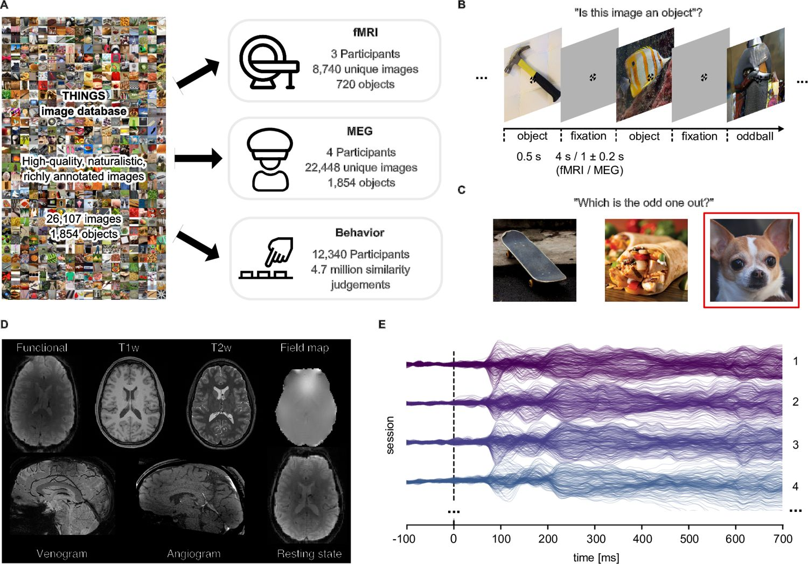

THINGS-data: large-scale multimodal datasets for object representations in brain and behavior
Hebart, M.N.*, Contier, O.*, Teichmann, L.*, Rockter, A., Zheng, C.Y., Kidder, A., Corriveau, A., Vaziri-Pashkam, M., Baker, C.I. (* equal contribution)
Understanding how the brain represents objects requires dense measurements across many objects and modalities. THINGS-data is a public collection of neuroimaging and behavioural data built for that purpose.
The collection pairs large-scale brain responses with high spatial (fMRI) and temporal (MEG) resolution to thousands of natural object images, alongside 4.7 million behavioural similarity judgments. All datasets are openly available with code and derivatives — single-trial response estimates, ROIs, quality metrics, embeddings.

Fig 1Overview of THINGS-data. (a) Thousands of images from the THINGS object database were used to obtain responses in the brain (fMRI, MEG) and in behavior. (b) Basic task in the neuroimaging experiments. (c) Odd-one-out behavioral similarity task. (d) Additional fMRI: anatomy, localizers, resting state. (e) MEG: 272 channels record neural activation with high temporal resolution. Hebart et al., eLife 2023 · CC BY 4.0
What's inside
720fMRI concepts · 12 sessions
8,740fMRI images
1,854MEG concepts
22,248MEG images
The fMRI dataset covers 720 object concepts (8,740 images) over 12 sessions per participant. The MEG dataset spans all 1,854 THINGS concepts (22,248 images). The behavioural dataset was collected via crowdsourced odd-one-out triplets and yields a 66-dimensional embedding of how people perceive object similarity.
Why it matters
THINGS-data is the core release of the THINGS initiative. It allows testing hypotheses at scale, replicating prior findings, and linking brain and behaviour across space and time — with an extensive and representative sample of objects.